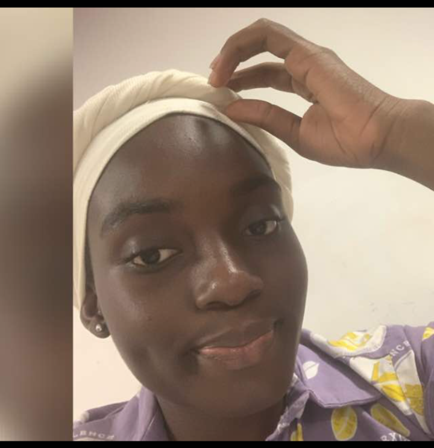

Université d'Abomey Calavi
Ecole Nationale d'Economie Appliquée et de Management
SOSSOUMIHEN Olafèmi Aimée Jennifer

I-Informations personnelles
Age: 18ans
Langues: Français,Fon et Minan
Loisirs: Musique,Lecture et Hand-ball
II- CURSUS
1-Primaire:
Complexe Scolaire La Marjolaine
Complexe Scolaire Saint Joseph
2016: Obtention du CEP
2-Secondaire:
Cours Secondaires La Marjolaine
2020: Obtention du BEPC
Collège Catholique Saint Jean-Baptiste
2023: Obtention du BAC
3-Université
2024:Licence 1 en Informatique de Gestion